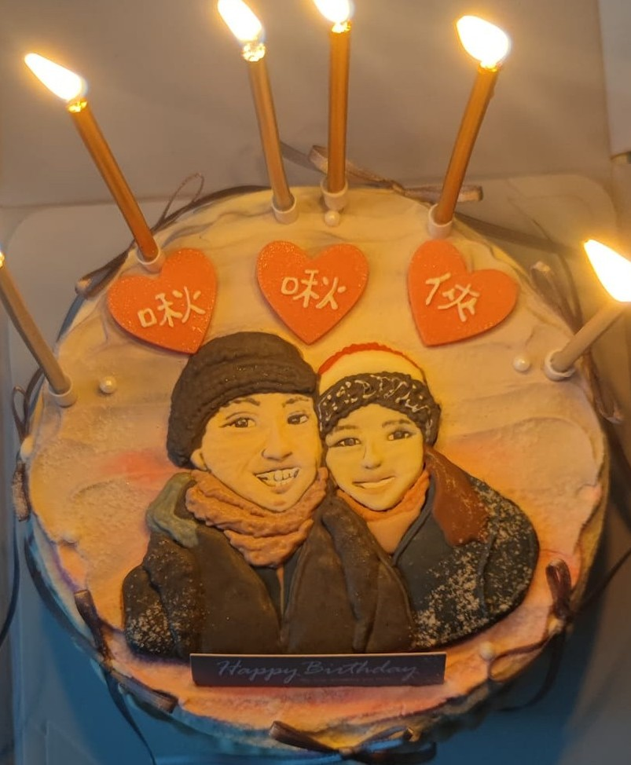

Jun-Rong (Lance) Chen

Summary
Data enthusiast with tireless curiosity on exploring and challenging existing dataset for un-explored fresh insights and business processes for improvements and streamlining opportunities; unparalleled cross-cultural team player, capable of communicating business/project objectives to diverse teams (including USA, India, Singapore, Malaysia, Korea, Europe, China and many more), ultimately contributing to end-to-end project completion
Education
- TibaMe, Taiwan: Completed AI Data Scientist Program (online course)
- Taiwan International Trade Institute (ITI), Taiwan: Sales and Marketing
- Defense Language Institute, Ministry of Defense, Taiwan: Foreign language advanced course on Spanish
- Bachelor of Arts, Norwich University, Vermont, USA: nternational Studies, with the language of Spanish
Work Experience
Senior IP Protection Analyst / Micron Technology
2022.05-Present
- Drove MEM (Micron External Manufacturing) team’s intellectual property (IP) project at around 20 worldwide subcontractors (both OSAT and EMS)
- Internally presented project achievements, gaps, and status to senior leadership team (VP/Director levels) on a quarterly basis, externally presented past performance, findings, or highlights/lowlights to subcontractors’ senior leadership team via Quarterly/Semiannual Business Reviews (QBRs/SBRs)
- Performed minor/moderate development activities: built PowerBI reports both for IP project and other MEM function teams; automated PO-teco compliance monitoring via auto-email triggers and SharePoint for Planning and Operations Teams; created auto data feed from MSSQL to Snowflake with SQL and Python
Project Manager / Askey Computer Corporation
2020.07-2021.05
- Supervised projects and related engineers as well as worked closely with manufacturing team on engineering samples for customer (North America and Europe) qualification and evaluation
- Presented and briefed weekly project status report to senior leadership group
- Interpreted/followed the guidelines and directives of foreign telecom carriers as well as 3rd party lab certifications to ensure customer/market acceptance for project success
Skills
- English Language Proficiency: ★★★★★
- Data Skills: ★★★★★
- Project Management: ★★★★★
Awards and Certifications
- Project Management Professional (PMP), PMI
- Cisco Certified (CCNA)
Others